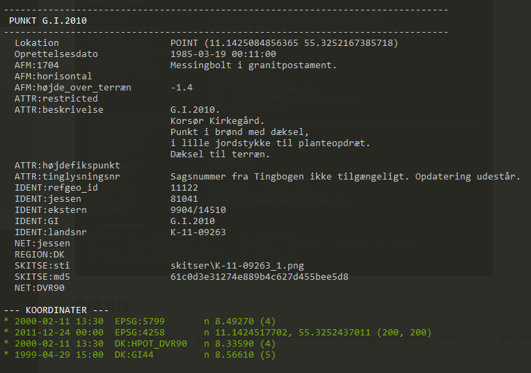
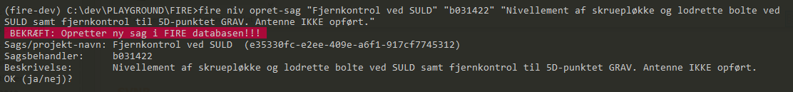
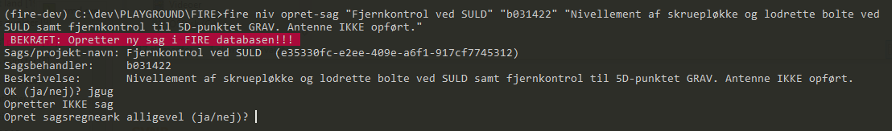
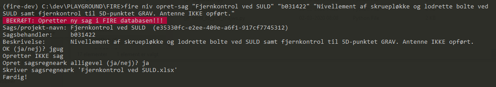
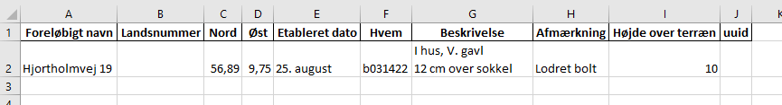
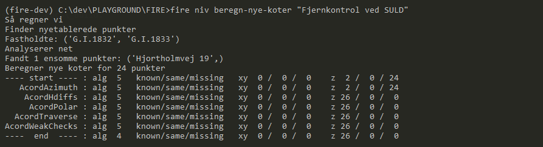
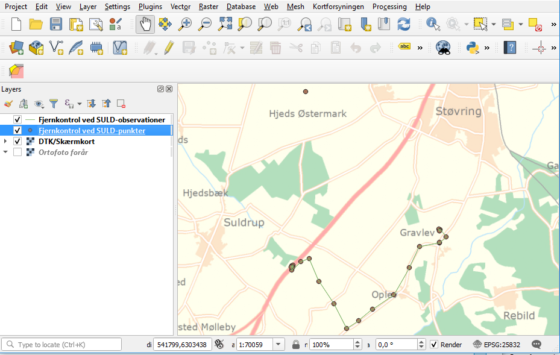

Præsentation af FIRE¶
FIRE indeholder alt den relevante information, som refgeo gør. Der er punktnumre, identer, skitser, koordinater, tidsserier, beskrivelse, afmærkningstyper osv. osv. Strukturen er dog en helt anden og meget mere overskuelig og vedligeholdelsesvenlig nede i maven på databasen, hvilket gør FIRE til en markant forbedring af et af vores vigtigste dataarkiver.
Dog er alt vores nuværende udjævnings- og datahåndteringssoftware (fx. ADJ,
valde og vedl.pl) tilpasset refgeo og det famøse KSM-format, hvilket ikke kan
bruges i det nye setup.
Derfor har vi udviklet adskillige kommandolinjekald, som har til formål at lade
brugeren se ned i databasen, udtrække det data der er relevant, putte ny data
ned i databasen osv.
Det er en løbende opgave, hvor der bliver udviklet den funktionalitet, som viser
sig nødvendig og brugbar til et gentagent formål.
Hvis nogen havde håbet på en lækkert designet brugergrænseflade med søgebokse og kasser, der kan hakkes af og en knap med beregn til til at lave en udjævning, som derefter bliver vist i QGIS, så må vi skuffe. Det er ikke der vi er; vi er slet ikke nok folk til at kunne retfærdiggøre at bruge tid og penge på at udvikle sådan noget, og desuden vil det være et hejs at vedligeholde og videreudvikle kode til, hvilket vi helst vil gøre selv. Derfor er det altså stadig kommandolinjekald, som er vejen frem! Men dermed bliver overgangen til ny database og beregningssoftware nok ikke så slem alligevel.
Nedenfor uddybes de funktionaliteter vi på nuværende tidspunkt har udviklet. Det er
alle underprogrammer (og under-underprogrammer) under fire og køres derfor ved
først at kalde fire efterfulgt af underkommandoens navn.
fire info¶
En grundliggende funktionalitet er at kunne se hvilken data, der ligger i databasen,
altså hvilken info man har i arkivet. Til det er der udviklet et kommandolinjeprogram
kaldet fire info. Man kan se hvad programmet indeholder ved at taste
> fire info --help
Herfra ses fem forskellige kommandoer man kan bruge:
infotypeobstypepunktsagsrid
Hvis man ønsker at fremsøge et punkt og se hvilke oplysninger, der knytter sig
til det (som man før kunne med valde, eller Valdemar i tjenesten), kan man
fx taste:
> fire info punkt gi2010
Note
Det er ligegyldet om der skrives med stort eller småt eller om der benyttes punktummer eller ej i argumentet. Dog skal der være bindestreg mellem herred, sogn og løbenummer.
I udtrækket plottes diverse oplysninger om punktet direkte på skærmen, som set på billedet:
Udtrækket viser den formodede relevante information, der ligger på punktet fra attribut-tabellerne og fra koordinattabellerne. I eksemplet ses det fx, at punktet
er oprettet i databasen 19/3 1985,
også hedder K-11-09263,
i øvrigt er et jessenpunkt til en tidsserie,
har en DVR90-kote fra 3. præc. indikeret ved EPSG-kode 5799 og beregningstidspunkt 11/2-2000 kl. 13:30),
har en plankoordinat fra 2011 (med EPSG-koden 4258) og to andre koordinater i andre net. Stjerne (eller farven grøn) indikerer at koordinaten er den gældende for det pågældende net.
På samme måde kan andre elementer slås op i databasen, bl.a. oplysninger om historiske koter med parameteren -K, observationer med parameteren -O og andre detaljer med parameteren -D.
Øvelse¶
Prøv selv at fremsøge mere info, fx:
alle observationer fra et givent punkt
alle historiske koordinater for et punkt
tekstbeskrivelsen på attributten AFM:2701
alle aktive sager i databasen
fire niv¶
Der er blevet udviklet et kommandolinjeprogram til udjævningsberegning kaldet niv.
Læs om hvordan programmet kaldes her
Fra dette kald kan hele produktionslinjen køres; fra dataudtræk, revision, beregning, til ilægning af resultat og generering af afsluttende rapport til kunde. Se mere ved at køre kaldet:
> fire niv --help
Alt datahåndtering foregår på Windows og i Excelregneark med diverse faneblade. Vi vil nedenfor gennemgå processen.
Note
Sørg for at bruge små bogstaver. Kald og parametre genkendes ikke med versaler. Undtagelsen er ved punktnumre; her kan både store og små bogstaver benyttes.
Step 1) opret-sag¶
I fire har vi valgt at knytte al beregning og fikspunkthåndtering op på såkaldte
sagsevents. Det vil sige at når man går igang med et nyt projekt, fx. en opgave
omhandlende opmåling og beregning af lokal vandstand i Havnebyen, så opretter man
en sag til denne opgave, hvori alt ens dataudtræk, observationer, beregninger og
endelige resultater bliver registreret på. Kaldet, der skal køres under fire niv
for at oprette en ny sag, hedder, passende nok, opret-sag. Lad os prøve at få
mere hjælp:
> fire niv opret-sag --help
Her kommer en beskrivelse af hvad der forventes af input:
Options: Valgfrit. Valgmuligheder ses i hjælpeteksten.
Projektnavn: Obligatorisk. Kan fx være Fjernkontrol_af_SULD. Dette bliver navnet på dit regneark.
Sagsbehandler: Obligatorisk. Skal altid være opretters B-NUMMER (af GDPR-årsager).
Beskrivelse: Valgfrit, men en god idé at beskrive nærmere hvad sagen indeholder, fx "Nivellement af skruepløkke samt lodrette bolte ved SULD samt fjernkontrol til 5D-punktet GRAV. Antenne IKKE opført."
Note
Hvis input består af flere ord, fx i projektnavn eller beskrivelse, skal disse indkaples i citationstegn (" "). Det anbefales dog IKKE at lave mellemrum i projektnavne.
I terminalen vil det se ud som dette, når der oprettes en sag:
Det ses, at der kommer en advarsel op. Da alt hvad der oprettes i databasen ikke kan slettes, er det en god idé at dobbelttjekke alt info man skriver til databasen. Hvis man er sikker på sit input, kan man svare "ja" til spørgsmålet. Hvis der svares alt andet, vil der ikke blive oprettet en sag i databasen.
Skrives der alt andet end "ja", får man valget om der alligevel skal oprettes sagsregneark (også kaldet projektfil). Hertil kan der svares "ja", og et excel-ark med filnavn som projektnavn oprettes i den mappe man kører kaldet i.
Excel-arket åbnes, og der ses seks faneblade:
Projektside: Her kan man løbende indtaste relevant info for projektet.
Sagsgang: Her vil sagens hændelser fremgå, efterhånden som de forekommer.
Nyetablerede punkter: Her kan man indtaste de nye punkter, som er oprettet til projektet.
Notater
Filoversigt: Her kan man indtaste filnavnene på opmålingsfilerne. husk at definere stien, hvis ikke filen ligger samme sted som projektfilen.
Parametre
Hvert faneblad kan nu redigeres til det formål man ønsker.
Note
Når man laver sit kommandokald, skal man sikre sig der ikke eksisterer et
projekt med det navn allerede, ellers vil fire brokke sig. fire kan ligeledes
ikke skrive til et allerede åbent excel-ark.
Ang. nyetablerede punkter: Hertil findes et faneblad, som skal udfyldes med mindst tre oplysninger:
Et foreløbigt navn
En længdegrad/Y, Nord (UTM eller grader)
En breddegrad/X, Øst (UTM eller grader)
De resterende kolonner må meget gerne også fyldes ud, men den videre proces er ikke afhængig af dem. Det man ikke kan udfylde, er Landsnummer og uuid, da det først genereres det øjeblik punktet ilægges databasen nede i step 4).
Note
Koordinater kan skrives både med UTM-format og med gradetal. fire genkender
selv formatet og transformerer til geografiske koordinater, som er standard i fire.
Step 2) udtræk-revision¶
Note
Steppet her kan springes over, såfremt man kun skal lave en beregning.
Når vi er ude at tilse punkter, fx ifm. den kommunale punktrevision, kontrolleres det
at punktets attributter (beskrivelse, lokation, bolttype osv.) er korrekt; hvis ikke
skal de rettes til.
Til det formål kan man kalde en kommando, der hedder udtræk-revision under
fire niv:
> fire niv udtræk-revision --help
Det ses man skal definere to parametre:
Projektnavn: Som defineret i
opret-sag. Indkapslet i " "Distriks- eller punktnavn(e): Her kan man fx. skrive 61-07 61-03 63-10 SULD
I terminalen vil det se ud som følger:

hvorefter punkterne udtrækkes og lægges i en ny excel-fil navngivet med "projektnavn"-revision.xlsx. Format er som vist nedenfor:

I dette ark kan man nu rette attributterne til efter behov. Nedenfor er vist:
rettelser for punkt K-63-09930 i attributterne ATTR:beskrivelse og AFM:højde_over_terræn
ændring i lokationskoordinaten (OVERVEJ:lokation)
tilføjelse af og om punktet kunne være muligt datumstabilt (OVERVEJ:muligt_datumstabil), at punktet nu er et restricted punkt (ATTR:restricted) og dens GNSS-egnetheden (ATTR:gnss_egnet)
at punktet er besøgt ved at fjerne kryds i kolonnen Ikke besøgt

Note
Attributter MED id indikerer at oplysningen er gemt og udtrukket fra databasen. Attributter UDEN id er endnu ikke oprettet i databasen.
Ved revision af mange punkter, er der oprettet en overblikskolonne, Ikke besøgt. Denne er født med et kryds ud for punktbeskrivelsen, da man derved kan tilføje excels filterfunktion, og filtrere de rækker væk uden et kryds. Pas på med ikke at sortere, da rækkerne så vil blive blandet. Efter filtrering kan man let se hvilke punkter man endnu ikke har været forbi... såfremt man husker at slette krydset fra de punkter man allerede HAR besøgt.
Step 3) ilæg-revision¶
Note
Steppet her kan springes over, såfremt man kun skal lave en beregning.
ENDNU IKKE FÆRDIGIMPLEMENTERET
> fire niv ilæg-revision --help

Der findes dog pt. en testfunktion (parameteren --test ), som kan vise dig hvor der er registreret nye attributter på punkterne, men som ikke lægger noget i databasen.


Step 5) læs-observationer¶
Når man har lavet sin opmåling færdig, ender man med en råfil eller mere, som skal beregnes. Disse filnavne (og tilhørende sti) skal tastes ind i excel-arket under fanen Filoversigt med en opmålingstype (mgl eller mtl), en apriori-spredning (sigma) og centreringsfejl(delta).
Herefter GEMMES EXCEL-ARKET og man vender tilbage til terminalen for
at lave kaldet læs-observationer (man behøver ikke at lukke sin projektfil,
da der ikke skrives til denne i kaldet, men blot læses herfra). Lad os se hvilke
parametre det har brug for:
> fire niv læs-observationer --help.
Her vises at den obligatoriske parameter er Projektnavn, hvilket i vores eksempel vil se således ud:


Efter kaldet er færdigkørt, vil der være dannet tre nye filer;
en projektnavn-resultat.xlsx
en projektnavn-observationer.geojson samt
en projektnavn-punkter.geojson
De to .geojson-filer er til indlæsning i QGIS til visualisering af nettet. Se her for mere.
Når resultatfilen åbnes, ses to faneblade; et med observationerne og et med en punktoversigt:

Bemærk kolonnen Sluk, som indikerer en mulighed for at udelade enkelte observationer i den videre beregning.

Bemærk også at nyetablerede punkter fra faneblad i projektfil fremgår med År lig 1800, Kote lig 0 og Middelfejl lig 1000000. I tilfældet her er et punkt etableret, men findes ikke i observationsfilen (Hjortholmvej 19), og det fremgår så også uden yderligere information.
Slutteligt står der i terminalen hvad man skal gøre som det næste: Kopiér nu faneblade fra 'Projektnavn-resultat.xlsx' til 'Projektsnavn.xlsx', og vælg fastholdte punkter i punktoversigten. Så det gør vi!
Note
For at flytte eller kopiere et faneblad til en anden excel-fil: Åbn filen du ønsker at flytte faner til. Højreklik på fanebladet der skal flyttes, vælg Flyt eller kopier, og udvælg hvor du vil have arket flyttet hen.
Step 6) regn¶
Vi skal nu til at beregne nye koter til de observerede punkter.
I ens projektfil kan man notere hvilke punkter skal fastholdes, ved at, i fanebladet
Punktoversigt, skrive x ud for punktet i Fasthold-kolonnen. Gem derefter filen
og vend tilbage til terminalen, hvor kaldet regn skal køres:
> fire niv regn --help
Herfra ses at man igen skal bruge Projektnavn som parameter, og har to valgmuligheder også; en kontrolberegning (1 punkt fastholdt) eller en endelig beregning. Hvis ingen tilvalg sættes, gætter scriptet selv på hvilken type beregning vi har, ud fra antal af fastholdte punkter. I terminalen vil det se således ud:
Det ses at der er valgt to punkter som fastholdt (G.I.1832 og G.I.1833), og et enkelt punkt er ikke med i nivellementslinjen (Hjortholmvej 19).
Der er også genereret flere resultatfiler, bl.a.
en projektnavn-resultat.xlsx (eller nye faner i eksisterende fil)
en projektnavn-resultat.xml (til intern brug for
fire)en projektnavn-resultat.html
I .html-filen findes diverse statistik over udjævningsberegningen, som det underliggende kode (GnuGama) genererer. Filen åbnes også default efter kørslen.
I resultatfilen er der nu tre faner;
Netgeometri,
Singulære og
Kontrolberegning
Netgeometrien viser hvilke punkter er naboer til hvilke punkter, og man kan herfra se om der er blinde linjer (punkter med kun én nabo). Singulære punkter er punkter, som ikke er forbundet med de(t) fastholdte punkt(er), og der derfor ikke kan beregnes en kote til.
Kontrolberegningen viser det egentlige beregningsresultat. Kolonner er nu fyldt ud med nyberegnede koter, middelfejl og differencen fra gældende kote, og man kan lave sin endelige vurdering af beregningen.
Fanebladet Kontrolberegning flyttes nu over i projektfilen på samme måde som før, og i
Punktoversigt-fanen kan man nu udvælge de fastholdte punkter til den endelige beregning.
Derefter køres regn igen (husk at lukke resultatfilen), og en ny beregning udføres;
denne gang vil det resulterende faneblad hedde Endelig beregning, som også kan flyttes
over i projektfilen, såfremt man er tilfreds med beregningsresultatet.

{kind=link}
{kind=link}
{kind=link}
{kind=link}
{kind=link}
{kind=link}
Step 8) ilæg-nye-koter¶
ENDNU IKKE FÆRDIGIMPLEMENTERET
> fire niv ilæg-nye-koter --help

Punktoversigten fra resultatarket indeholder den info, som skal lægges i databasen: Koter, middelfejl osv. Hvis der er punkter, som man ikke ønsker skal have ny kote, kan man sætte x i kolonnen Udelad publikation, som vist nedenfor:

På den måde fremgår punktet stadig i projektfilen og det er tydeligt at punktet er valgt fra ved koteopdateringen.
Step 9) luk-sag¶
ENDNU IKKE FÆRDIGIMPLEMENTERET
Visualisering i QGIS¶
For at få en grafisk visning af sit opmålte net, bruges QGIS. Man kan åbne QGIS enten via startmenuen i Windows eller ved at taste
> qgis
i sin terminal (såfremt det miljø man arbejder i har QGIS tilknyttet).
I step 5) blev der genereret to .geojson-filer, en punktfil og en observationslinjefil. Disse to kan direkte indlæses i QGIS, fx vha. drag-and-drop. Nedenfor ses hvordan nettet i eksemplet ovenfor ser ud. Der er en række punkter der er målt imellem, samt et singulært punkt; det nyetablerede ved Hjortholmvej 19.
{kind=link}
Der er blevet udviklet et plugin til QGIS, der hedder flame. Med dette bør det
være muligt let at få vist punkter fra databasen i et brugbart regi. Fx kan man fremsøge
alle punkter inden for en given kommune, et givent distrikt osv.
Pluginet er endnu ikke færdigudviklet og testet af, derfor afventer en nærmere gennemgang af det. Men der bliver udviklet på funktionaliteterne løbende og som behovet opstår.